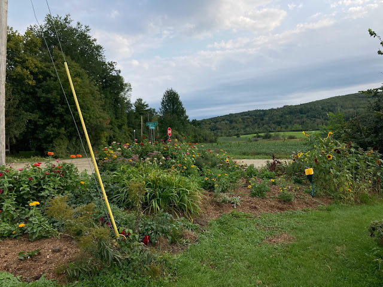
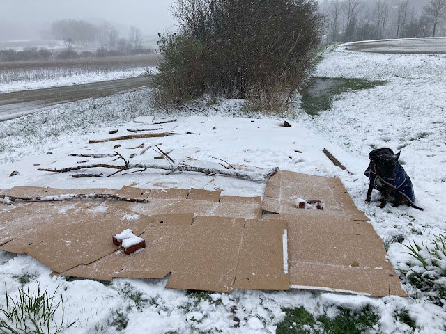

Garden Profile
Fairwinds Farm

The pollinator garden at Fairwinds Farm is on the corner of Higbee rd and Covered Bridge rd in Monkton, Vermont. The garden is on private property, however is visible at the intersection. Located across from protected land, the garden provides food and host plants for local pollinators. Fields surrounding this garden are consistently hayed, which diminishes food resources for pollinators in the area. Planting roadside gardens helps a selection of native plants have been identified to begin this garden and have mostly thrived. Birds have started to nest in the plants and the monarchs have been spotted!
Before
